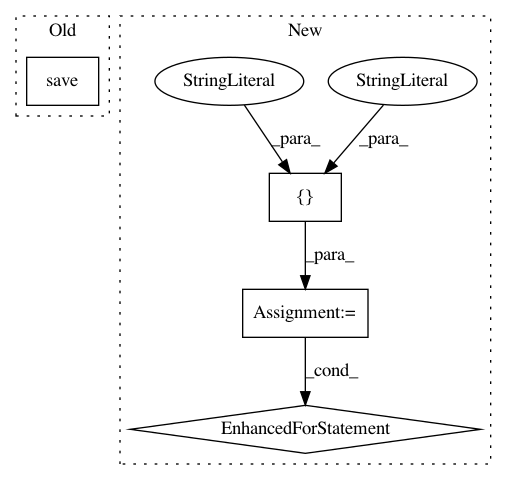

b92be51f6fc463ab7deef20fab640b3b2f50b497,doc/examples/brain_extraction.py,,,#,5
Before Change
mask = hist_mask(b0)
nib.save(nib.Nifti1Image(b0, affine), "b0.nii.gz")
nib.save(nib.Nifti1Image(mask.astype("byte"), affine), "mask.nii.gz")
After Change
//img, gtab = read_stanford_hardi()
files = ["./test_bench/Stanford/b0.nii.gz",
"./test_bench/3T/GE/b0.nii.gz",
"./test_bench/3T/Siemens/b0.nii.gz",
"./test_bench/3T/Philips/b0.nii.gz",
"./test_bench/1.5T/GE/b0.nii.gz",
"./test_bench/1.5T/Siemens/b0.nii.gz"]
for f in files:
img = nib.load(f)
b0 = img.get_data().squeeze()
affine = img.get_affine()
//b0 = np.mean(data[..., 0:9], axis=-1)
mask = hist_mask(b0)
//nib.save(nib.Nifti1Image(b0, affine), f + "b0.nii.gz")
nib.save(nib.Nifti1Image(mask.astype("byte"), affine), f + "_mask.nii.gz")
In pattern: SUPERPATTERN
Frequency: 4
Non-data size: 4
Instances
Project Name: nipy/dipy
Commit Name: b92be51f6fc463ab7deef20fab640b3b2f50b497
Time: 2013-08-06
Author: garyfallidis@gmail.com
File Name: doc/examples/brain_extraction.py
Class Name:
Method Name:
Project Name: pytorch/audio
Commit Name: 774ebc78a779834581be6313cf5b53511104b5fc
Time: 2019-12-19
Author: vincentqb@users.noreply.github.com
File Name: test/test.py
Class Name: Test_LoadSave
Method Name: test_3_load_and_save_is_identity
Project Name: mil-tokyo/webdnn
Commit Name: 959372edab3020c0164b8a2da4aaff1c49ba8400
Time: 2017-07-02
Author: y.kikura@gmail.com
File Name: example/resnet/convert_resnet_keras.py
Class Name:
Method Name: main
Project Name: epfl-lts2/pygsp
Commit Name: 96b4ef4e0cec0f35674b4b610c683994e2067ade
Time: 2018-10-12
Author: charles.gallay@epfl.ch
File Name: pygsp/tests/test_graphs.py
Class Name: TestCaseImportExport
Method Name: test_save_load